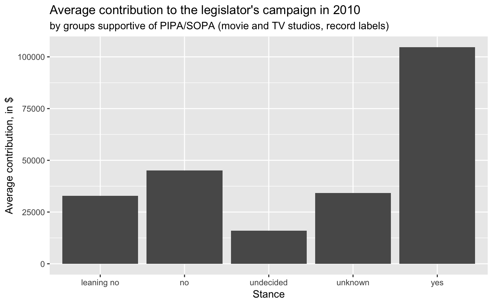
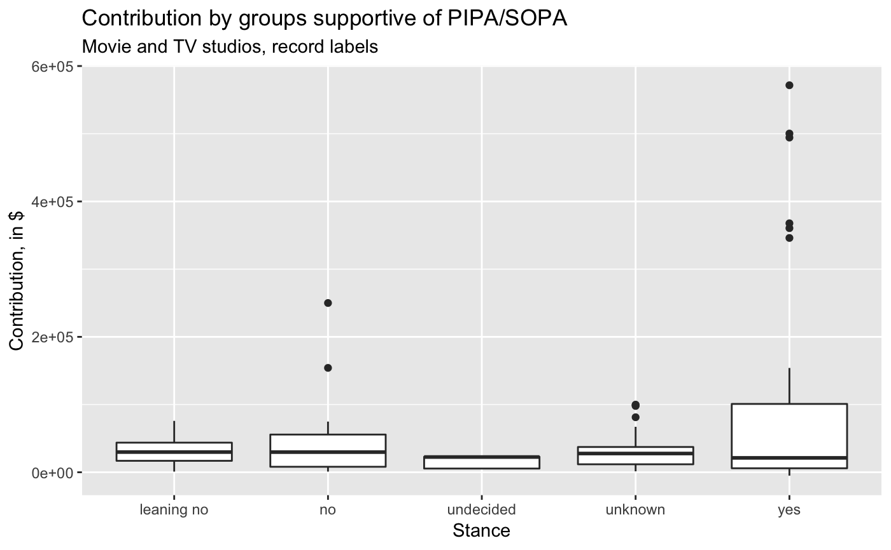
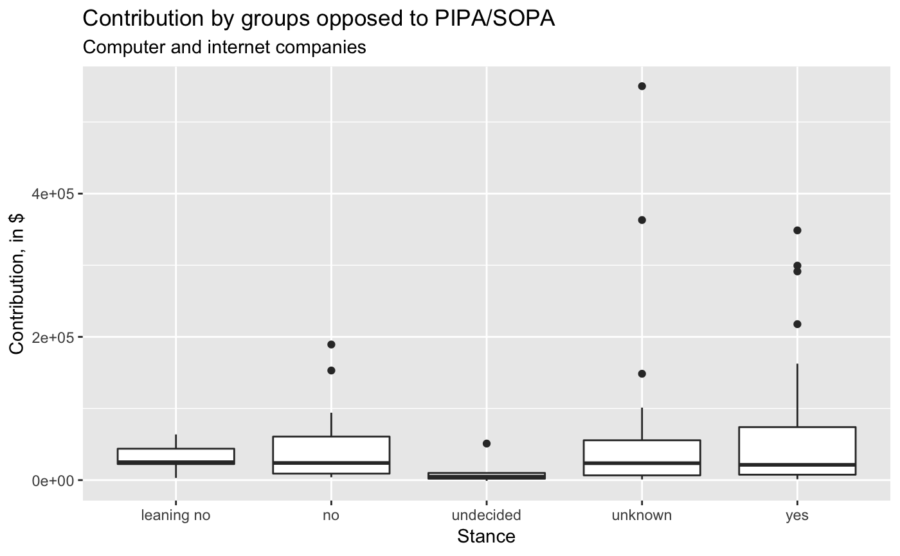
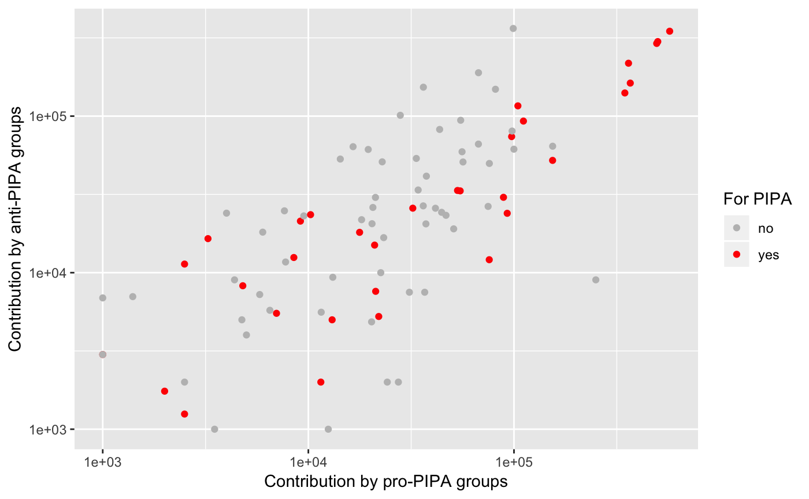

piracy.RdThis data set contains observations on all 100 US Senators and 434 of the 325 US Congressional Representatives related to their support of anti-piracy legislation that was introduced at the end of 2011.
A tibble with 534 observations on the following 8 variables.
Name of legislator.
Party affiliation as democrat (D), Republican
(R), or Independent (I).
Two letter state abbreviation.
Amount of money in dollars contributed to the legislator's campaign in 2010 by groups generally thought to be supportive of PIPA/SOPA: movie and TV studios, record labels.
Amount of money in dollars contributed to the legislator's campaign in 2010 by groups generally thought to be opposed to PIPA/SOPA: computer and internet companies.
Number of years of service in Congress.
Degree of support for PIPA/SOPA with levels
Leaning No, No, Undecided, Unknown, Yes
Whether the legislator is a member of either the
house or senate.
http://projects.propublica.org/sopa/
The list may be slightly out of date since many politician's perspectives on the legislation were in flux at the time of data collection.
The Stop Online Piracy Act (SOPA) and the Protect Intellectual Property Act (PIPA) were two bills introduced in the US House of Representatives and the US Senate, respectively, to curtail copyright infringement. The bill was controversial because there were concerns the bill limited free speech rights. ProPublica, the independent and non-profit news organization, compiled this data set to compare the stance of legislators towards the bills with the amount of campaign funds that they received from groups considered to be supportive of or in opposition to the legislation.
For more background on the legislation and the formulation of
money_pro and money_con, read the documentation on ProPublica,
linked below.
OpenIntro, http://www.openintro.org
data(piracy) library(dplyr) library(ggplot2) pipa <- filter(piracy, chamber == "senate") pipa %>% group_by(stance) %>% summarise(money_pro_mean = mean(money_pro, na.rm = TRUE)) %>% ggplot(aes(x = stance, y = money_pro_mean)) + geom_col() + labs(x = "Stance", y = "Average contribution, in $", title = "Average contribution to the legislator's campaign in 2010", subtitle = "by groups supportive of PIPA/SOPA (movie and TV studios, record labels)")ggplot(pipa, aes(x = stance, y = money_pro)) + geom_boxplot() + labs(x = "Stance", y = "Contribution, in $", title = "Contribution by groups supportive of PIPA/SOPA", subtitle = "Movie and TV studios, record labels")#> Warning: Removed 6 rows containing non-finite values (stat_boxplot).ggplot(pipa, aes(x = stance, y = money_con)) + geom_boxplot() + labs(x = "Stance", y = "Contribution, in $", title = "Contribution by groups opposed to PIPA/SOPA", subtitle = "Computer and internet companies")#> Warning: Removed 6 rows containing non-finite values (stat_boxplot).pipa %>% filter( money_pro > 0, money_con > 0 ) %>% mutate(for_pipa = ifelse(stance == "yes", "yes", "no")) %>% ggplot(aes(x = money_pro, y = money_con, color = for_pipa)) + geom_point() + scale_color_manual(values = c("gray", "red")) + scale_y_log10() + scale_x_log10() + labs(x = "Contribution by pro-PIPA groups", y = "Contribution by anti-PIPA groups", color = "For PIPA")